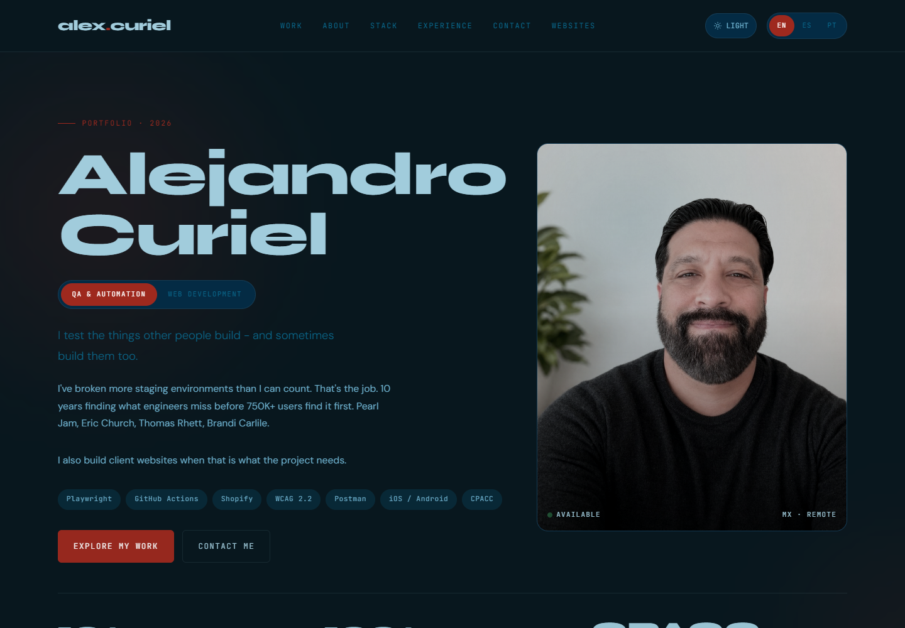
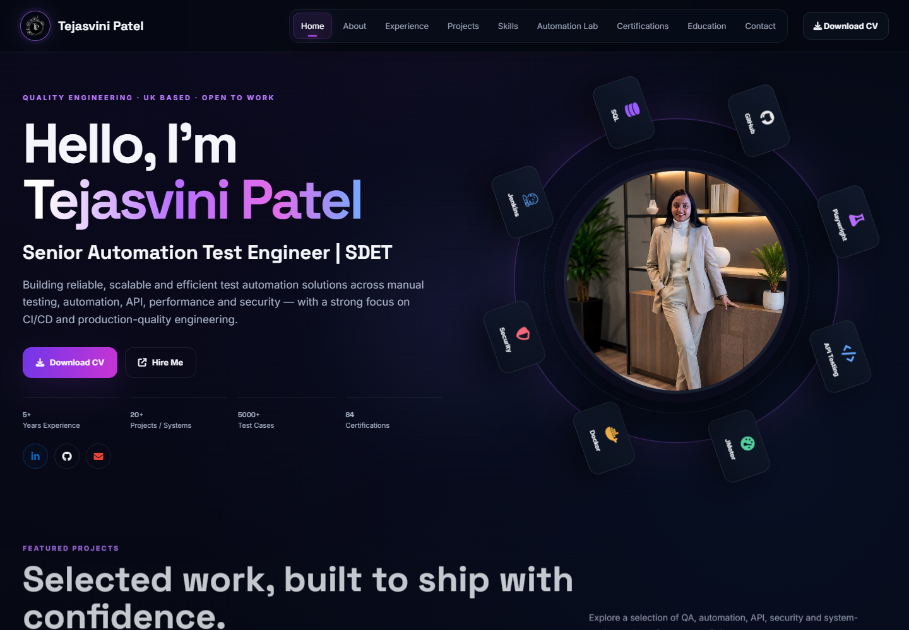
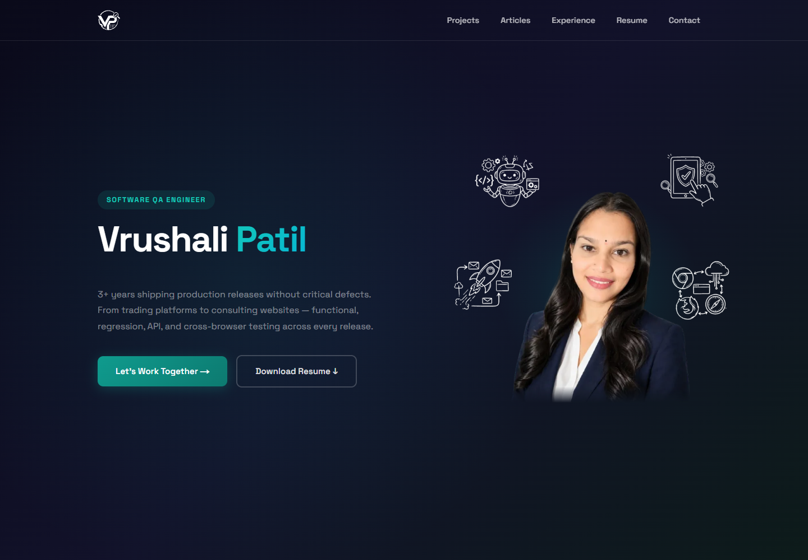
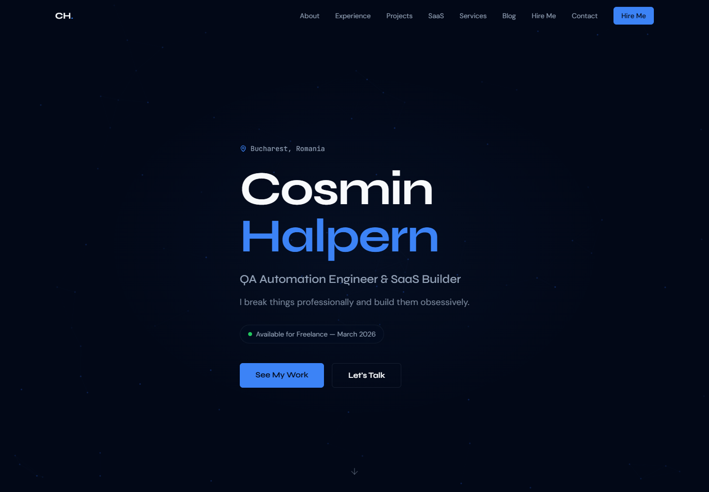

Alejandro Curiel
Nome e retrato dominam a abertura; especialidade, experiência e projetos têm apresentação direta. Tem controles de idioma e tema.

BENCHMARK / PORTFÓLIOS PÚBLICOS DE QA
Quatro referências abertas e analisadas. Capturas reais das páginas para comparar identidade, hierarquia e apresentação profissional.
Nome e retrato dominam a abertura; especialidade, experiência e projetos têm apresentação direta. Tem controles de idioma e tema.

Cargo sênior explícito, currículo, contratação e números logo na abertura. Projetos organizados com acesso a detalhes.

Retrato e identificação profissional, projetos com detalhes, experiência por função e artigos próprios.

QA, produtos próprios e serviços de consultoria separados. Nome, especialidade e contato claros.

Seu nome e seu cargo devem abrir a página. Hoje, a frase de posicionamento e um painel de princípios têm mais peso que sua identidade e seu trabalho.
Os projetos precisam parecer cases. Capturas, relatórios, decisões e resultados demonstram sua atuação. Os desenhos abstratos atuais não mostram o que você construiu.
A senioridade precisa aparecer na narrativa. Dar contexto à criação do programa de QA, aos seis produtos e às decisões de CI ajuda a explicar sua experiência para recrutadores e clientes.
Recomendação: presença pessoal de Alejandro, clareza de recrutamento de Tejasvini e organização entre QA/produtos/consultoria de Cosmin. Manter grafite + jade, PT/EN e claro/escuro em uma composição própria.
Análise visual em 02/10/2026. Capturas para referência privada; conteúdo e identidade pertencem aos respectivos autores.
Comparar com seu portfólio atual ↗